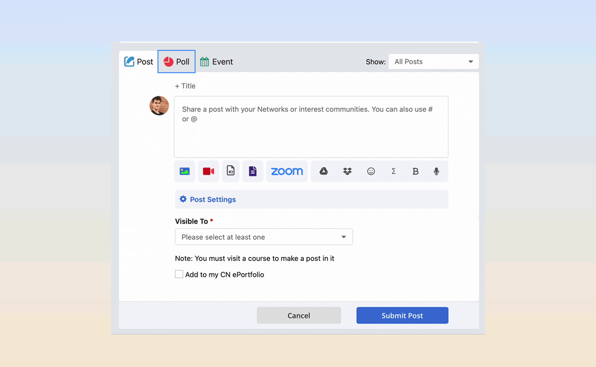

Making an education platform fully accessible.
Accessibility isn't a feature you bolt on at the end; it's the baseline for whether a product is usable at all. I led the work to bring CourseNetworking, an education platform used by students across a wide range of abilities, into conformance with WCAG 2.0, then published it so clients could trust it.
Inclusive by default, not exception.
Creating products that everyone can use is a core part of being a good designer, and it's an ethical line: no one should be excluded because of a disability. I audited the existing product against the Web Content Accessibility Guidelines (WCAG), designed the missing pieces, and paired with two engineers to ship them. Meeting the guidelines didn't just include the users we were excluding; it made the whole product easier to navigate for everyone.
Non-text content: user-authored alt text.
A screen reader can't perceive an image unless someone describes it. I designed an interface that lets users add their own alt text the moment they upload an image, right inside the existing upload flow. Making it fast and obvious to write a description meaningfully improved usability for screen reader users and laid the groundwork for the accessibility features that followed.

Captions: WebVTT in the video player.
For video, we adopted WebVTT, the common web caption format, and built caption upload directly into our player. I modeled the flow on the alt-text interface we'd already researched and tested, so adding captions felt familiar rather than like a separate, technical task.

Keyboard: fully operable without a mouse.
Not everyone uses a mouse. Every interface I design has to be fully operable from the keyboard, with no reliance on timing or gesture. I worked through each surface to guarantee a logical focus order and reachable controls, so the entire product can be navigated by keyboard alone.

Contrast: a palette you can actually see.
You can't use what you can't see. I built the design system's color scheme around contrast ratios that clear the WCAG AA threshold, then audited key surfaces like global search to confirm every text and control pair passed. The result is a palette that's compliant and simply more legible.

Error suggestion: tell people how to fix it.
A good error message doesn't just say something went wrong; it says how to fix it. Errors are frustrating, sometimes upsetting, so I rewrote our form validation to name the specific problem and the exact correction, turning a dead end into a clear next step.

Gender field: expression without a weapon.
Originally we let users type a custom gender to allow for free self-expression, but a handful abused the open field to demean others. I replaced it with a curated dropdown that still offers a wide range of identities, expanded over time from user feedback, preserving expression while removing the vector for hateful conduct.

Beyond fixing specific issues, the work shipped new capabilities, user-authored alt text, captions, clearer errors, that made the product better for everyone, not only users with disabilities. We documented our conformance in a Voluntary Product Accessibility Template (VPAT), which several prospective clients required before signing.
What the work taught me.
Accessibility is design quality, not a checklist. Almost every fix, higher contrast, clearer errors, sane keyboard order, made the product better for every user, not just the ones it was strictly required for.
Model new patterns on tested ones. Reusing the alt-text flow for captions meant users learned one interaction, not two, and the second feature shipped faster.
Structure can protect people. The gender field taught me that maximum freedom isn't always the inclusive choice; sometimes thoughtful constraint is what keeps a space safe.